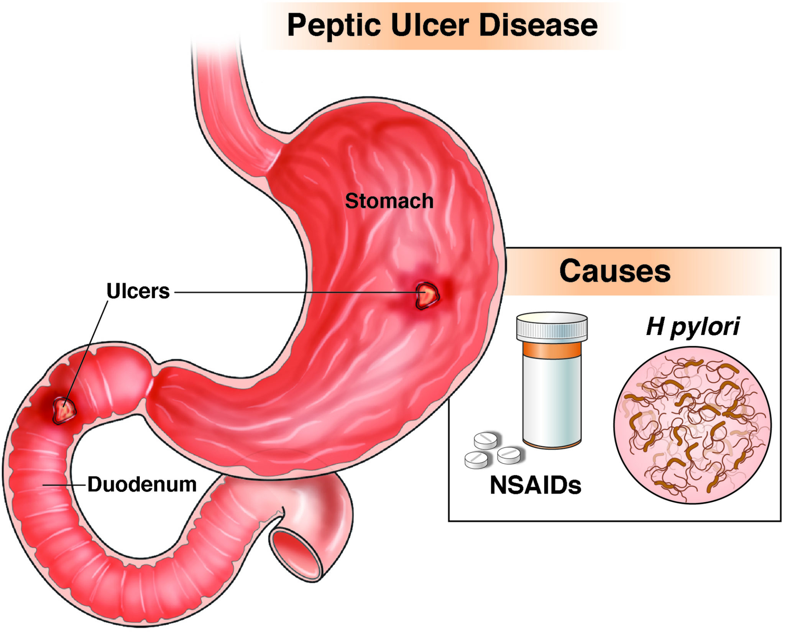

Mi-HEALTHplus
WHAT TO KNOW ABOUT ULCER AND EFFECTIVE CURE



WHAT TO KNOW ABOUT ULCER AND EFFECTIVE CURE
An ulcer is a painful sore that is slow to heal and sometimes recurs. Ulcers aren’t uncommon. Why they appear and their corresponding symptoms typically depend on their underlying causes.
Ulcers can appear anywhere in or on your body, from the lining in your stomach to the outer layer of your skin.
Sometimes ulcers disappear on their own. Other times they require medical treatment to prevent serious complications.
DIFFERENT TYPES OF ULCERS
There are a few types of ulcers, including:
- arterial ulcers
- venous ulcers
- mouth ulcers
- genital ulcers
Arterial ulcers

Arterial (ischemic) ulcers are open sores that primarily develop on the smaller side of arterioles and capillaries, most often around the outer side of your ankle, feet, toes, and heels.
Arterial ulcers develop from damage to the arteries due to a lack of blood flow to the tissue. Arterial ulcers are also sometimes found in the gut in individuals who are ill and have poor blood pressure in general.
These forms of ulcers can take months to heal and require proper treatment to prevent infection and further complications.
Arterial ulcers have a “punched out” appearance accompanied by a number of symptoms, including:
- red, yellow, or black sores
- hairless skin
- leg pain
- no bleeding
- affected area cool to the touch from minimal blood circulation.
Treatment for arterial ulcers depends on the underlying cause. Primary treatment includes restoring blood circulation to the affected area.
While antibiotics may help reduce symptoms, your doctor may recommend surgery to increase blood flow to your tissues and organs. In more severe circumstances, your doctor may recommend amputation.
Venous ulcers

Venous ulcers — the most common type of leg ulcers — are open wounds that often form on your leg, below your knee, and on the inner area of your ankle. They typically develop from damage to your veins caused by insufficient blood flow back to your heart.
In some cases, venous ulcers cause little to no pain unless they’re infected. Other cases of this condition can be very painful.
Venous ulceration is not always in the gaiter region. It can be situated directly downstream of hidden (A) and more obvious varicose veins (B). These are termed varicose/variceal ulcers. Note the surrounding lipodermatosclerosis which is pathognomonic for venous ulceration
Other symptoms you may experience include:
- inflammation
- swelling
- itchy skin
- scabbing
- discharge
Venous ulcers can take months to fully heal. In rare cases, they may never heal. Treatment focuses on improving flow to the affected area. Antibiotics can help prevent infection and reduce symptoms, but they aren’t enough to heal venous ulcers.
Alongside medication, your doctor may recommend surgery or compression therapy to increase blood flow.
Peptic ulcers


Peptic ulcers are sores or wounds that can develop on:
- the inside lining of your stomach
- the upper portion of your small intestine
- your esophagus
They form when digestive juices damage the walls of your stomach or intestine. These ulcers are quite common.
Peptic ulcers are most often caused by inflammation after contracting Helicobacter pylori (H. pylori) bacteria or through long-term use of nonsteroidal anti-inflammatory drugs (NSAIDs).
There are two types of peptic ulcers:
- gastric ulcers, or ulcers that develop in the stomach lining
- duodenal ulcers, or ulcers that develop in the duodenum (small intestine)
The most common symptom of this condition is a burning sensation.
Other symptoms may include:
- bloating or the feeling of being full
- belching
- heartburn
- nausea
- vomiting
- unexplained weight loss
- chest pain
Treatment depends on the underlying cause of your ulcer. If you have an H. pylori infection, your doctor may prescribe antibiotics to kill the harmful bacteria.
For the majority of peptic ulcer cases, acid-lowering medication regimens are generally prescribed to help protect the mucosal lining from stomach acid so it has time to heal.
Mouth ulcers


Mouth ulcers are small sores or lesions that develop in your mouth or the base of your gums. They’re commonly known as canker sores.
These ulcers are triggered by a number of causes, including:
- stress
- hormonal changes
- vitamin deficiencies
- bacterial infection
- diseases
Mouth ulcers are common and often go away within 2 weeks. They can be uncomfortable but shouldn’t cause significant pain. If a mouth ulcer is extremely painful or doesn’t go away within 2 weeks, seek immediate medical attention.
Minor mouth ulcers appear as small, round ulcers that leave no scarring. In more severe cases, they can develop into larger and deeper wounds. Other serious symptoms associated with this type of ulcer may include:
- unusually slow healing (lasting longer than 3 weeks)
- ulcers that extend to your lips
- issues eating or drinking
- fever
- diarrhea
Mouth ulcers often go away on their own without treatment. If they become painful, your doctor or dentist may prescribe an antimicrobial mouthwash or ointment to reduce your discomfort.
If your condition is the result of a more serious infection, seek medical attention to receive the best treatment.
Genital ulcers
Genital ulcers are sores that develop on genital areas, including the penis, vagina, anus, or surrounding areas. They are usually caused by sexually transmitted infections (STIs), but genital ulcers can also be triggered by trauma, inflammatory diseases, or even, in some cases, an Epstein-Barr viral (EBV) infection.
In addition to sores, symptoms that may accompany genital ulcers include:
- rash or bumps in the affected area
- pain or itching
- swollen glands in the groin area
- fever
Similar to other types of ulcers, treatment depends on the underlying cause of your condition. In some cases, these sores will go away on their own. If diagnosed with an STI, your doctor may prescribe antiviral or antibiotic medication or ointment. If you feel you’ve been exposed to an STI, seek immediate medical attention.
Stomach ulcer symptoms

The most common symptom of a peptic ulcer is stomach pain. Often, the pain starts in the center of your stomach and can travel up to your throat or seemingly down your back. This pain can last for a few minutes to a few hours and is usually only temporarily eased by antacids.
You may also feel ill if you have a stomach ulcer and may lose weight.
Serious complications of peptic ulcers include:
- vomiting blood
- passing dark, tarry stools
- a sudden, sharp pain in your stomach that only gets worse, not better
There is no difference between stomach ulcer symptoms in men versus stomach ulcer symptoms in women; however, men are typically more predisposed to developing these types of ulcers, according to the National Health Service (NHS).
Do ulcers go away?
Most ulcers, no matter where they are on the body, are caused by underlying issues. Therefore, the answer to “do ulcers go away?” is directly related to how effective the treatment is for the underlying health issue.
Some ulcers, like peptic and genital ulcers, will go away but then reappear, even with treatment. If you find yourself dealing with chronic ulcers and haven’t yet pinned down a cause, it’s important to talk with your doctor immediately.
How long does it take for ulcers to heal?
The length of time it takes for your ulcer to heal depends on the type, as well as the severity of the ulcer itself.
For many peptic ulcers, the healing time is around a month or so with treatment.
Arterial ulcers can take several months to heal, or may not even heal at all.
With compression therapy, venous ulcers can be healed in a few months, although some may not heal at all.
Mouth ulcers, or canker sores, can take anywhere from a week to 4 weeks to heal with treatment. However, many people have reoccurring mouth ulcers.
The amount of time it takes to heal genital ulcers really depends on what is causing them. For example, individuals living with genital herpes, which is a sexually transmitted disease, can treat their ulcers but cannot cure them, so they may periodically reappear.
Most ulcers will go away faster with the proper treatment.
Everyting you've read so far seems to be what you're experiencing right now, then you need to read on because there's a product that is guaranteed to make all the symptoms go away without relapse. It has worked for thousands of people, it is exactly what you need!!
...Everyone has their stories, Gen.Danladi was willing to share his. yours might be similar or Different from his. However, for him there was a light at the end of the Tunnel. You might be at the brink of giving up because of the money you've pent but his story might inspire you,
Just read on!!!
I had a very active youth and spent 35 years in the military. After retiring, I entered the business world and began running marathons in my spare time, something I always enjoyed. In September, while preparing for another marathon, I discovered I could hardly run due to chest pains. After a two-week break, the problem persisted, and I also had difficulty swallowing. Realizing something was wrong, I went to the hospital.
A new doctor saw me this time. A year earlier, a different doctor dismissed my chest pain and sore throat concerns. The new doctor ordered a blood test, and a few days later, I received a call in the evening. He told me I was very anemic and losing blood. I mentioned coughing up a little blood weeks prior and having black stools. He insisted I come in immediately, but I persuaded him to wait until Monday. After a blood transfusion, I felt much better but needed iron tablets to help with my red cell count.
Although I was still working, an endoscopy was scheduled. The nurse found a stomach ulcer, which I hoped would heal quickly with the prescribed medication. Eight weeks later, having heard nothing, I called the doctor and arranged another endoscopy. This time, the ulcer was still there, and I was advised to increase my medication dose, but I was already at the maximum. An urgent CT scan was ordered, and I was told the results might take weeks.
Later that month, I received a letter for a meeting with a surgeon and another from a consultant, both scheduled for the same Friday. I was anxious about the series of appointments. The consultant diagnosed me with GERD (Gastroesophageal Reflux Disease), a chronic condition where stomach acid or bile irritates the food pipe lining.
My surgery on November 30, 2020, lasted eight hours. After a day in recovery, I left the hospital with over 30 staples in my stomach and spent time at home taking various tablets, including iron, salt, and initially tramadol for pain. I thought surgery would resolve my issues, but I began experiencing symptoms again. Antibiotics from my doctor didn't help.
While waiting for an appointment, I spoke with someone who recommended a capsule. I decided to try it and received a diet plan along with the capsules. The three-month treatment was highly effective. If I had known about it earlier, I would have avoided surgery. I returned to work on March 30 and resumed training. Since then, my CT scans have been clear, and I am not taking any medication. Everything is going well.
It is an Ayurvedic Product and not herbal
It eradicates any variants of Ulcer without any form of relapse.
The Ingredients are carefully curated and tailored to eradicate any varient of ulcer regardless of the symptoms and also the severity.
it is certified by FDA, GMP, ISO and other Health bodies.
For the guaranteed efficacy, it is pocket-friendly. you might actually need to consider saving money this time for something that worths your penny.
A treatment of two bottles each and contains 120 capsules in all, that which you can never find anywhere.

ALOE VERA: Aloe vera is a medicinal plant with antioxiddant and antibacterial properties.
LICORICE: Licorice root contains beneficial compounds like glycyrrhzin, which has antioxidant, antimicrobial, and anti-inflammatory properties.
TURMERIC: Turmeric contains curcumin, an ingredient with medicienal benefits.
INDIAN FRANKINCENSE: For centuries, people have turned to Indian frankincense for belly aches like nausea and indigestion.
TRIPHALA: It is descrived as tridoshic Rasayana in Ayurveda, capable of balancing and rejuvenating the three doshes that regulate human life: Vata, pitta, and Kapha. It is widely used in deveral diease conditions owing to it following properites.
CORIANDER: coriander is a fragrant, anitoxidant-rich herb that has many culinary uses and health benefits.


Pst. Ugochukwu Iheanacho, Anambra
"i kept seeing this same advert over and over again. I've used several drugs, at first, i got relieved and afterwards, it comes back. I've spent a lot and nothing seems to change. I'm happy i could summon the ourage to get this, it worked for me. I can at least say it now that, I'm Ulcer free for the past 4 years."

Alhaja Abubakr, Maitama, Abuja
"Thank you for the discovery of VANTACIN +. My husband and i have been suffering from Gonorrhea and i got 5 bottle for myself and for him. We were both losing it but I told him to use it just 30 days. Upon completion, we went to the hospital for a test. The test showed that we had no traces of infections in us. I'm glad I took action"

Mrs Goodness Adams, Lagos
"In all honesty and fairness, this product worked for me and I'll recommend this a million times to people. I used to have burning sensations around my chest, I do regurgitate and also experience Indigestion. I've been battling this for years and I've taken lots of products but to no avail. I used this product for 3 months and all i can say is I'm grateful to God".
Choose a Package pricing plan that fits your needs.